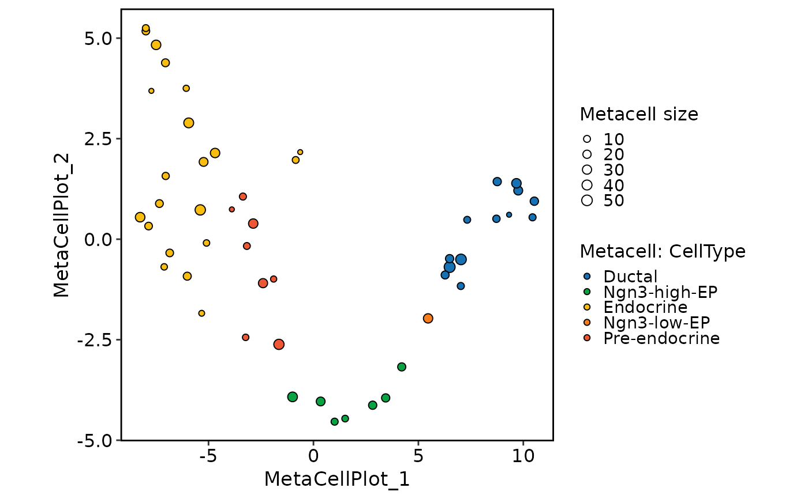
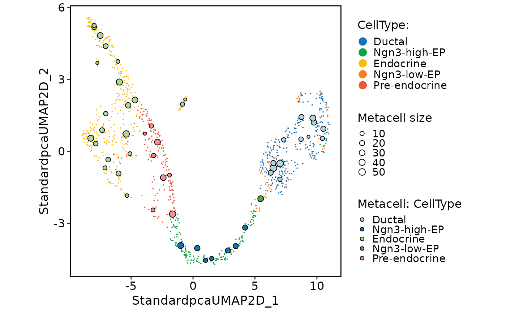
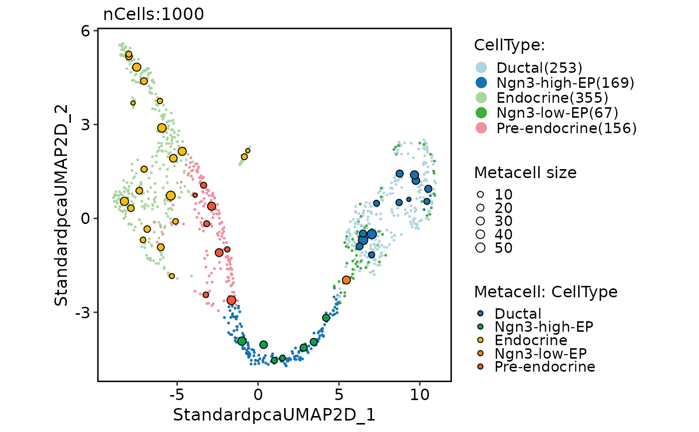

Visualize metacell partitions on a dimensionality reduction
Source:R/MetaCellPlot.R
MetaCellPlot.RdVisualize metacell partitions on a dimensionality reduction
Usage
MetaCellPlot(
object,
reduction = NULL,
show_cells = FALSE,
group.by = NULL,
color.by = NULL,
dims = c(1, 2),
label = FALSE,
palette = "Chinese",
palcolor = NULL,
palette_metacell = "Chinese",
palcolor_metacell = NULL,
pt.size = 1.2,
pt.alpha = 1,
cell.alpha = 1,
cell.size = 0.7,
stroke = 0.5,
show_metacell_size = TRUE,
metacell_size_range = NULL,
cell_param = list(),
metacell_param = list(),
legend.position = "right",
legend.direction = "vertical",
theme_use = "theme_scop",
theme_args = list(),
return_layer = FALSE,
...,
srt = NULL
)Arguments
- object
A
Seuratobject with metacell results fromRunMetaCell().- reduction
Reduction to plot.
NULLuses DefaultReduction.- show_cells
Logical. If
TRUE, the original single-cell points are drawn as a semi-transparent background layer behind the metacell centroids.- group.by
Metadata column(s) used to color cells.
- color.by
Metadata column in the metacell Seurat used to color centroids. If
NULL, metacell centroids use one fixed color.- dims
Length-2 vector of dimensions to plot.
- label
Group labels.
label_insitu = FALSEuses numbers instead of group names.- palette, palcolor
Palette name (thisplot::show_palettes) or custom colors.
- palette_metacell
Color palette for the metacell centroid layer.
- palcolor_metacell
Custom colors for the metacell centroid layer.
- pt.size, pt.alpha
Point size and transparency.
pt.size = NULLscales withsqrt(n)(minimum0.3). Rasterized points keep at least a two-pixel radius atraster.dpi = c(512, 512)and scale withraster.dpi.- cell.alpha
Alpha value for the original single-cell background layer.
- cell.size
Point size for the original single-cell background layer.
- stroke
Point border stroke width for metacell centroids.
- show_metacell_size
Whether to map
metacell_sizeto centroid size.- metacell_size_range
Point-size range used when
show_metacell_size = TRUE.- cell_param
A named list of extra arguments passed to
CellDimPlot()for the original single-cell background layer.- metacell_param
A named list of extra arguments passed to
CellDimPlot()for the metacell centroid/query layer.- legend.position
Legend placement (
"none","left","right","bottom","top"), direction, and title.legend.title = NULLuses the group name.- legend.direction
Legend direction:
"horizontal"or"vertical".- theme_use, theme_args
Theme name or function, plus extra theme arguments.
- return_layer
Logical. If
TRUE, returns a named list of ggplot2 layers/scales (cells,fill_scale,centroids,scale_fill,scale_size,labels) instead of a complete plot.- ...
Additional arguments passed to
geom_point()for metacell centroids.- srt
Deprecated alias for
object; supply exactly one of the two. It will be removed in scop 1.0.0.
Examples
Restored example output generated on 2026-10-13 from SCOP 53ed7e08f. These historical examples have not been revalidated against the current release. Current usage and arguments are documented above.
data(pancreas_sub)
pancreas_sub <- RunStandardWorkflow(pancreas_sub, verbose = FALSE)
#> ℹ [2026-10-13 16:35:35] Skip `log1p()` because `layer = data` is not "counts"
mc <- RunMetaCell(
pancreas_sub,
method = "supercell",
gamma = 20
)
#> ℹ [2026-10-13 16:36:43] Running SuperCell with gamma = 20, k.knn = 5 on 1000 cells
#> ℹ [2026-10-13 16:36:44] `RunMetaCell()` ("supercell") built 50 metacells from 1000 cells
#> ℹ [2026-10-13 16:36:44] Metacell size summary: min 5, median 16.5, mean 20, max 56 cells
#> ✔ [2026-10-13 16:36:44] `RunMetaCell()` returned metacell Seurat with 50 metacells. Original cells in `@misc[["original_srt"]]`
MetaCellPlot(
mc,
group.by = "CellType",
palette_metacell = "ChineseSet8"
)

MetaCellPlot(
mc,
group.by = "CellType",
reduction = "umap",
palette = "ChineseSet8",
show_cells = TRUE
)

CellDimPlot(
pancreas_sub,
group.by = "CellType"
) +
MetaCellPlot(
mc,
group.by = "CellType",
return_layer = TRUE,
palette_metacell = "ChineseSet8"
)
